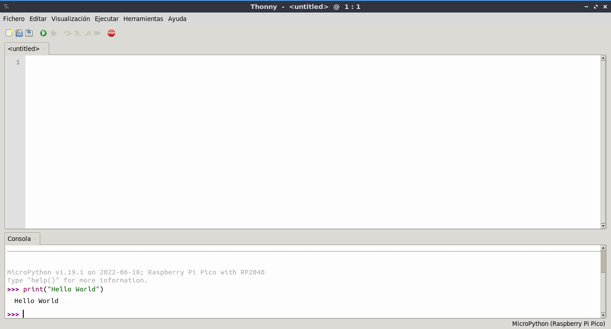
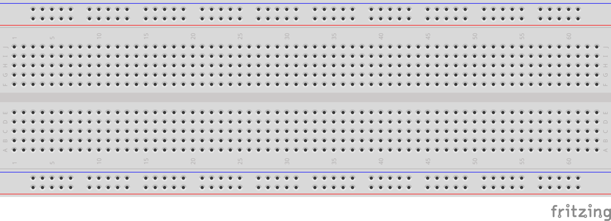
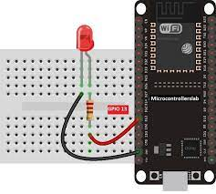
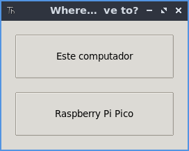
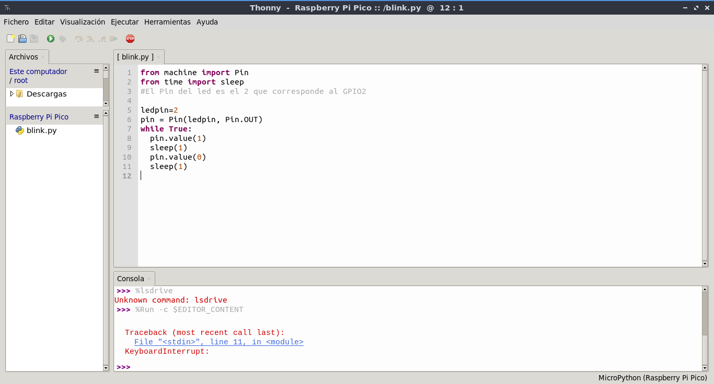

Primeros Pasos
Una vez tenemos todo instalado, ya podemos empezar a utilizar nuestra placa.
Usar el Interprete
En nuestra placa esta instalado el interprete REPL como si de cualquier distribución python se tratara. Por lo que podemos trabajar con este interprete y dar algunas ordenes.
Si estamos utilizando Thonny, podemos verlo en la parte inferior de la pantalla.
NOTA: Recuerda configurar correctamente el puerto de la placa a utilizar.

Eletrónica Básica
Vamos a ver algunos conceptos básicos de electrónica que nos permitirán entender mejor como funcionan las placas y los microcontroladores.
GPIO
Los GPIO (General Purpose Input Output) son los pines de entrada y salida que tienen las placas para poder interactuar con el exterior. Estos pines pueden ser configurados como entradas o salidas digitales.
Entradas Digitales
Las entradas digitales son aquellas que permiten leer el estado de un pin, es decir, si está en alto (1) o en bajo (0). Esto nos permite leer el estado de sensores, botones, etc.
Salidas Digitales
Las salidas digitales son aquellas que permiten enviar una señal a un pin, es decir, ponerlo en alto (1) o en bajo (0).
Configuración de Pines en MicroPython
En MicroPython, para configurar los pines GPIO, utilizamos la clase Pin del módulo machine. Esta clase nos permite configurar un pin como entrada o salida.
BreadBoard
Una BreadBoard es una placa de pruebas que nos permite realizar montajes electrónicos sin necesidad de soldar. Esto nos permite realizar prototipos de manera rápida y sencilla.
En la siguiente imagen podemos ver una BreadBoard típica:

Esto nos permitirá interactuar directamente con nuestra placa. Ya que permite conectar dispositivos electrónicos como leds, resistencias, botones, sensores, etc.
Las breadboards tienen filas y columnas de conexiones que nos permiten conectar los componentes entre sí y con la placa. Una breadboard típica tiene dos áreas principales: la zona de alimentación (power rails) y la zona de conexiones (terminal strips).
En la zona de alimentación, encontramos dos filas largas en cada lado de la breadboard que se utilizan para distribuir la alimentación (Vcc) y la tierra (GND) a los componentes conectados en la breadboard.
En la zona de conexiones, encontramos filas y columnas de agujeros donde podemos insertar los componentes electrónicos. Cada fila está conectada internamente, lo que significa que todos los agujeros en una fila están conectados entre sí.
LED y Resistencia
Un LED (Light Emitting Diode) es un diodo que emite luz cuando pasa una corriente eléctrica a través de él. Los LEDs tienen dos patas: la pata larga es el ánodo (positivo) y la pata corta es el cátodo (negativo).
Para proteger el LED y evitar que se queme, es necesario utilizar una resistencia en serie con el LED. La resistencia limita la corriente que pasa a través del LED.
Primer Programa con MicroPython
Vamos a ponernos ya manos a la obra; crearemos nuestro primer programa con MicroPython. Comenzando por lo más sencillo. Encender y apagar un Led.
Primero, vamos a realizar nuestro primer montaje; por lo que necesitaremos los siguientes materiales:
- 1 placa ESP32 o Raspberry Pi PICO
- 1 BreadBoard
- 1 Led
- 1 Resistencia 220Ohmios
- cables Dupont
Realizaremos el siguiente Montaje

NOTA: En el caso de Raspberry Pi usar el mismo GPIO
Una vez hecho esto, crearemos en thonny el siguiente código Python.
from machine import Pin
from time import sleep
#El Pin del led es el 2 que corresponde al GPIO2
ledpin=2
pin = Pin(ledpin, Pin.OUT)
while True:
pin.value(1)
sleep(1)
pin.value(0)
sleep(1)
NOTA: Dependiendo de la placa el número de Pin puede cambiar. Para la Raspberry Pi Pico es el GPIO25 mientas para la Raspberry Pi Pico W es el GPIO0. Consulta la documentación del fabricante.
Una vez escrito, lo guardaremos. Cuando le demos a guardar, nos preguntará donde lo queremos almacenar; si en nuestro equipo, o en nuestra placa.

Una vez almacenado, ya podemos verlo en nuestra placa. Podemos tener varios ficheros y verlos si pulsamos la opción Visualización->archivos. Podremos ver el listado de ficheros en nuestra placa y gestionarlos.

Una vez subido el fichero y ejecutado, ya deberíamos de poder ver parpadear nuestro led.
NOTA: En caso de no verlo, comprueba la polaridad del Led la patilla Larga es siempre la negativa.
Ejercicio con 2 Leds
Os dejamos un Ejercicio con dos leds para que veáis como funcionaría:

Con el código correspondiente.
from machine import Pin
from time import sleep
ledpin=2
ledpin2=4
pin = Pin(ledpin, Pin.OUT)
pin2 = Pin(ledpin2, Pin.OUT)
while True:
pin.value(1)
pin2.value(1)
sleep(1)
pin.value(0)
pin2.value(0)
sleep(1)
Botones Con MicroPython
Tras ver como utilizar la salida a través de los leds; vamos a tratar de utilizar pulsadores para poder utilizar las entradas del microcontrolador. En este caso también utilizaremos la clase Pin pero en este caso configuraremos cada puerto en modo IN.
Para este montaje, usaremos los siguientes materiales:
- 1 Placa ESP32 o Raspberry Pi PIco
- 1 BreadBoard
- 1 Led
- 1 resistencia 220Ohmios o similar.
- 1 resistenia 1KOhmios o similar.
- 1 Boton
- cables Dupont
Veamos el montaje:

Y seguidamente mostramos el código:
from machine import Pin
import time
button=Pin(2,Pin.IN)
led=Pin(16,Pin.OUT)
while True:
state=button.value()
led.value(state)
time.sleep(0.5)
Ejercicio: Realizar un montaje que sea necesario pulsar 2 Botones para que se encienda el led.